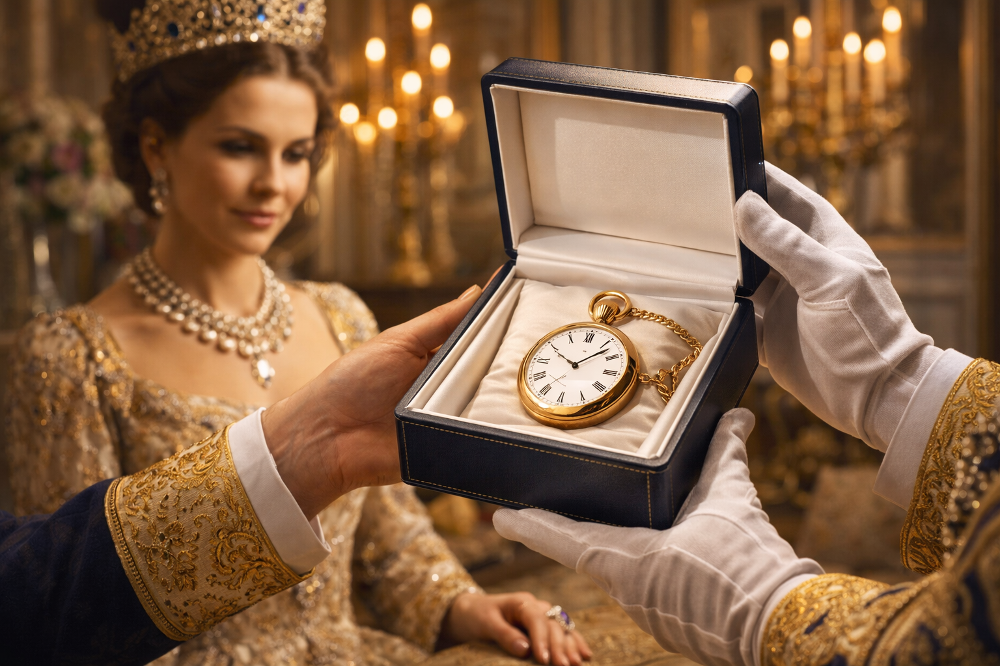
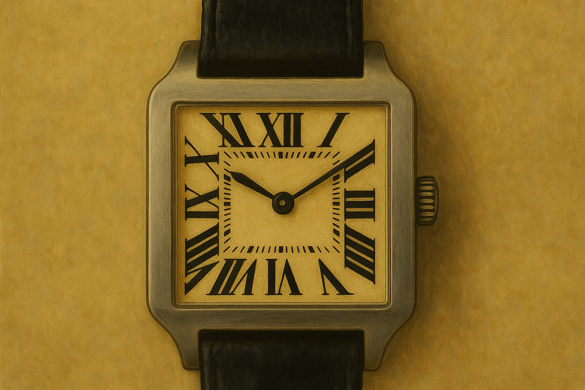
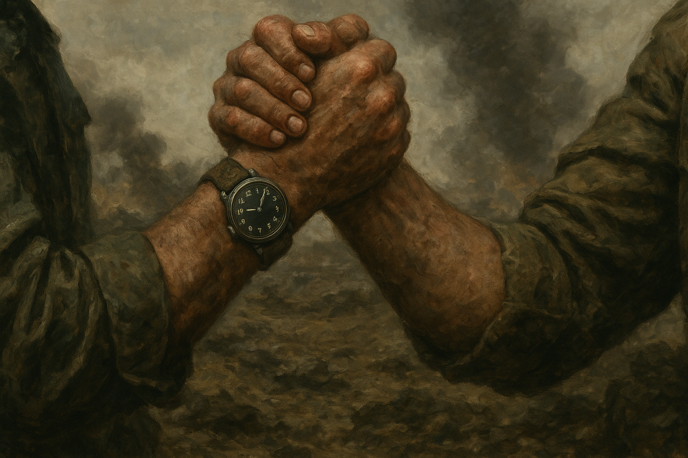

Quem inventou o relógio de pulso?
Hoje parece impossível viver sem ele, mas o relógio de pulso percorreu um caminho e tanto até chegar aos nossos braços: nasceu como joia da realeza, foi rejeitado pelos homens por décadas, sobreviveu a uma guerra mundial e só então se tornou o objeto prático e universal que conhecemos. E o nome de um brasileiro está no meio dessa história.
Neste artigo
1. O relógio "perdido" de Breguet, 1810
Antes de qualquer marca suíça famosa, o relojoeiro francês Abraham-Louis Breguet já havia criado o que muitos historiadores consideram o primeiro relógio de pulso do mundo. Por volta de 1810, Breguet foi encomendado pela Rainha Carolina Murat de Nápoles — irmã de Napoleão Bonaparte — a fazer um relógio que pudesse ser usado preso ao pulso, e não guardado no bolso.
O problema é que essa peça nunca foi encontrada. Não há um exemplar físico, fotografia ou desenho técnico que comprove sua existência além dos registros de encomenda — por isso, embora seja citada como o "primeiro" relógio de pulso, ela é tratada com cautela pelos historiadores da relojoaria. É justamente essa lacuna que abre espaço para a Patek Philippe reivindicar o título quase 60 anos depois.
2. 1868: Patek Philippe e a Condessa Koscowicz

O registro mais sólido e mundialmente aceito é de 1868, quando a relojoaria suíça Patek Philippe — fundada por Antoine Norbert de Patek e o relojoeiro francês Jean-Adrien Philippe — criou um relógio de pulso para a Condessa Koscowicz, da Hungria. Era uma peça de joalheria refinada, decorada e pensada como acessório de moda, não como instrumento prático de medição do tempo.
Por décadas depois disso, relógio de pulso era sinônimo de acessório feminino. Os homens continuavam fiéis ao relógio de bolso, considerado mais sério e elegante para o universo masculino da época — usar um relógio no pulso chegava a ser motivo de piada entre eles.
3. Santos-Dumont, Cartier e o relógio que mudou tudo

A virada masculina do relógio de pulso tem nome, sobrenome e nacionalidade brasileira: Alberto Santos-Dumont. No início do século XX, o "pai da aviação" enfrentava um problema prático nos seus voos — não dava para soltar os comandos da aeronave para tirar o relógio de bolso e cronometrar o tempo de voo.
Santos-Dumont levou a queixa ao amigo joalheiro Louis Cartier, que — com a ajuda do mestre relojoeiro Edmond Jaeger — desenvolveu um modelo de caixa quadrada com pulseira de couro, apresentado em março de 1904. O design, com parafusos visíveis no bezel inspirados na estrutura da Torre Eiffel, rompia com a tradição dos relógios redondos e se tornou a base da coleção Cartier Santos, comercializada a partir de 1911 e vendida até hoje, mais de um século depois.
4. Dos salões para os campos de batalha
Mesmo com o exemplo de Santos-Dumont, o relógio de pulso masculino ainda era visto com desconfiança pela maioria dos homens — "coisa de mulher", diziam. O que finalmente mudou esse cenário foi a Primeira Guerra Mundial (1914–1918). Em combate, soldados e oficiais precisavam sincronizar ataques com precisão de minutos, e tirar o relógio do bolso em pleno tiroteio era simplesmente inviável.
Relógios de bolso passaram a ser adaptados com alças de couro improvisadas para serem usados no pulso — os chamados "trench watches" (relógios de trincheira). Terminada a guerra, milhões de homens que serviram nas forças armadas voltaram para casa já acostumados ao relógio de pulso, e o que era estigma virou símbolo de praticidade, masculinidade e modernidade.
Breguet cria um relógio de pulso para a Rainha Carolina Murat — peça nunca encontrada, hoje tratada como lenda histórica.
Patek Philippe cria o relógio de pulso da Condessa Koscowicz — o marco aceito como origem oficial do relógio de pulso.
Cartier cria o relógio de pulso para Santos-Dumont — base da futura linha Cartier Santos.
O modelo Cartier Santos começa a ser comercializado para o público em geral.
A Primeira Guerra Mundial populariza definitivamente o relógio de pulso entre os homens, com os "trench watches" usados nas trincheiras.
5. Marcas e modelos que fizeram história

Depois da virada masculina pós-guerra, marcas suíças e francesas correram para criar modelos voltados a esse novo público. Algumas peças se tornaram tão icônicas que continuam sendo vendidas — quase sem mudanças de design — mais de um século depois.
🚀 Curiosidade Extra
A história do relógio de pulso e a da aviação se cruzam mais de uma vez: o mesmo Santos-Dumont que pediu o relógio a Cartier em 1904 realizaria, dois anos depois, em 1906, o primeiro voo público de um avião mais pesado que o ar na Europa, a bordo do 14-Bis. O relógio que cronometrava seus testes acabou se tornando tão lembrado quanto o próprio avião.
6. Perguntas frequentes ❓
Conclusão
O relógio de pulso nasceu como joia para rainhas e condessas, passou décadas sendo evitado pelos homens e só se tornou universal depois de provar seu valor nas trincheiras de uma guerra mundial. No meio dessa trajetória está a história de um brasileiro, Santos-Dumont, cuja necessidade prática nos céus ajudou a moldar um dos acessórios mais usados no mundo até hoje — muito antes dos smartwatches reinventarem tudo de novo.
Fontes e referências
- Wikipédia — Relógio de pulso
- Revista Minerva Universitária — História da Patek Philippe
- Italian Watch Spotter — Cartier Santos-Dumont History
- Medeiros, Alexandre. Santos Dumont e a Física do Cotidiano. Editora Livraria da Física, 2006.
- Hoffman, Paul. Wings of Madness: Alberto Santos-Dumont and the Invention of Flight. Hyperion, 2003.